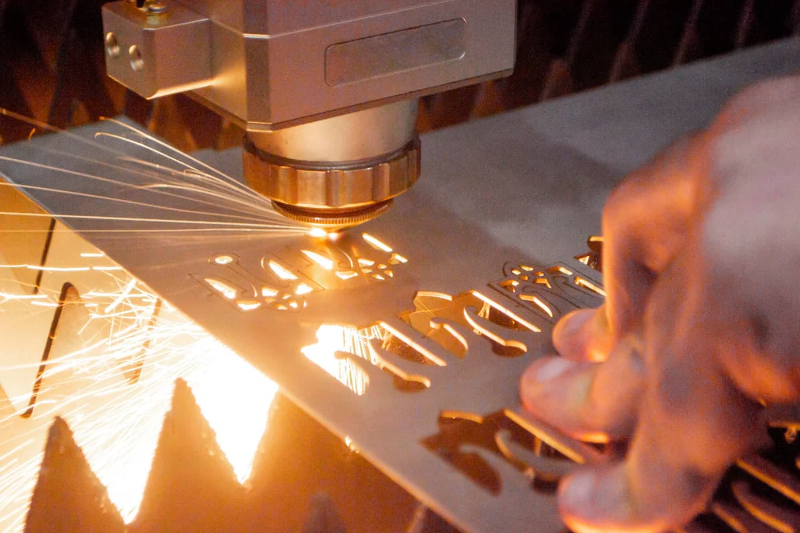
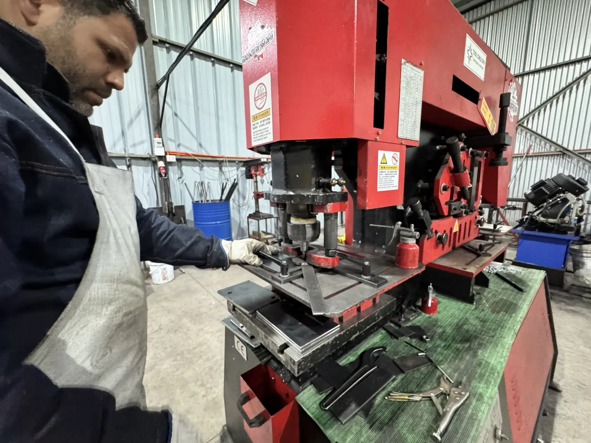
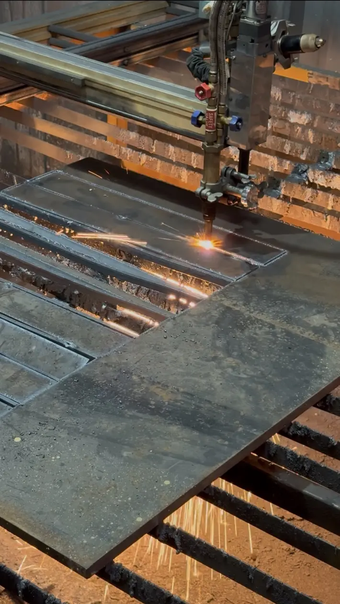
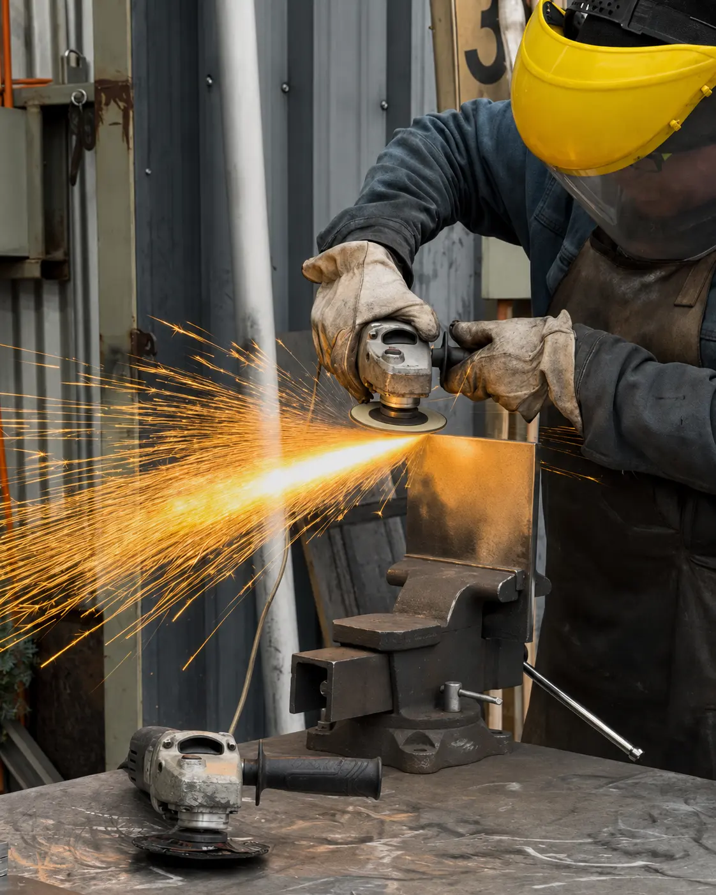
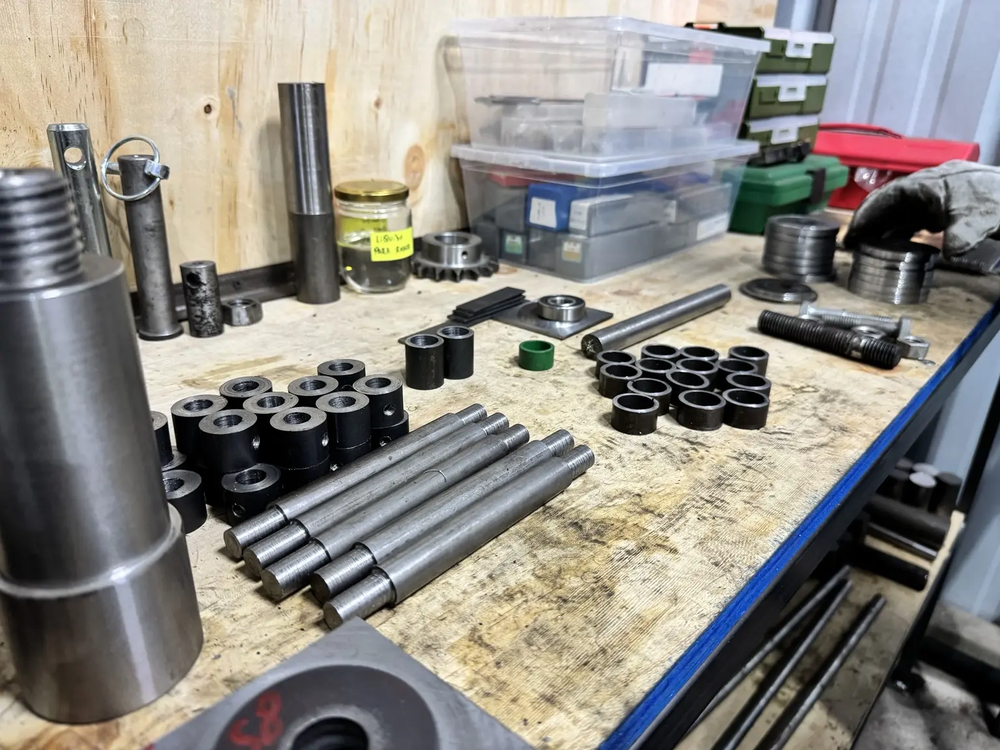
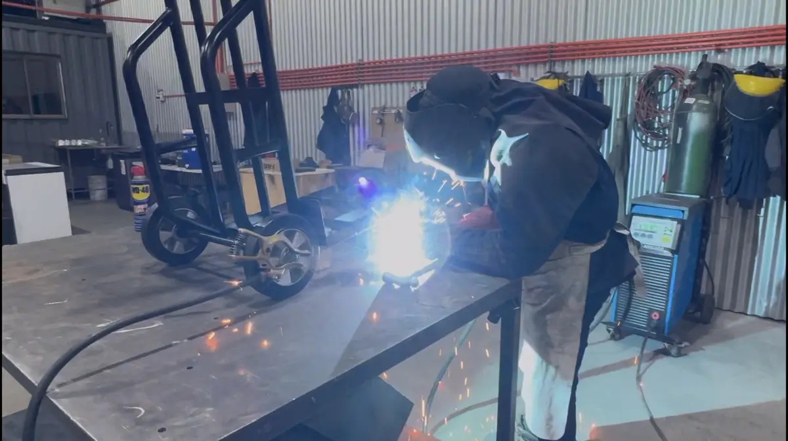
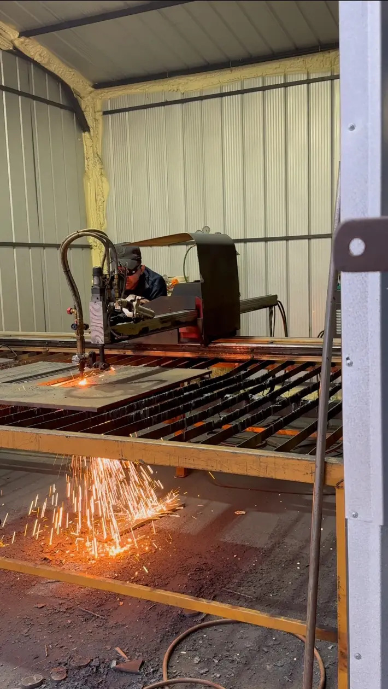

Corte láser de fibra
Corte preciso de piezas y geometrías en lámina metálica, con definición según material, espesor, plano y volumen requerido.
Ver servicio →Atendemos trabajos de fabricación, reparación, mecanizado e implementación. Puedes contratar el trabajo aunque no compres una máquina.

Corte preciso de piezas y geometrías en lámina metálica, con definición según material, espesor, plano y volumen requerido.
Ver servicio →
Perforación, corte y conformado de piezas metálicas con matrices intercambiables para distintos diámetros y geometrías.
Ver servicio →
Corte automatizado de planchas y ejecución de piezas para proyectos metalmecánicos según plano, material y requerimiento.
Ver servicio →
Desbaste, pulido, limpieza de bordes y preparación de piezas metálicas después del corte o antes de su armado.
Ver servicio →
Fabricación, recuperación y ajuste de piezas mediante torno, fresado y apoyo técnico.
Ver servicio →
Fabricación y reparación de estructuras, carros, tolvas y componentes industriales mediante corte, mecanizado, armado y soldadura.
Ver servicio →
Instalación, configuración inicial, pruebas y capacitación para operar nuevos equipos.
Ver servicio →Las fotografías corresponden únicamente a procesos reales ya documentados. Los servicios que todavía no tienen registro fotográfico se presentan como información textual.
Describe el problema o trabajo: revisaremos si podemos ejecutarlo directamente o coordinar una solución.
Enviar consultaComparte medidas, material, cantidad, plano, fotografías, ubicación y plazo requerido. Si no tienes todos los datos, comenzamos por lo disponible.